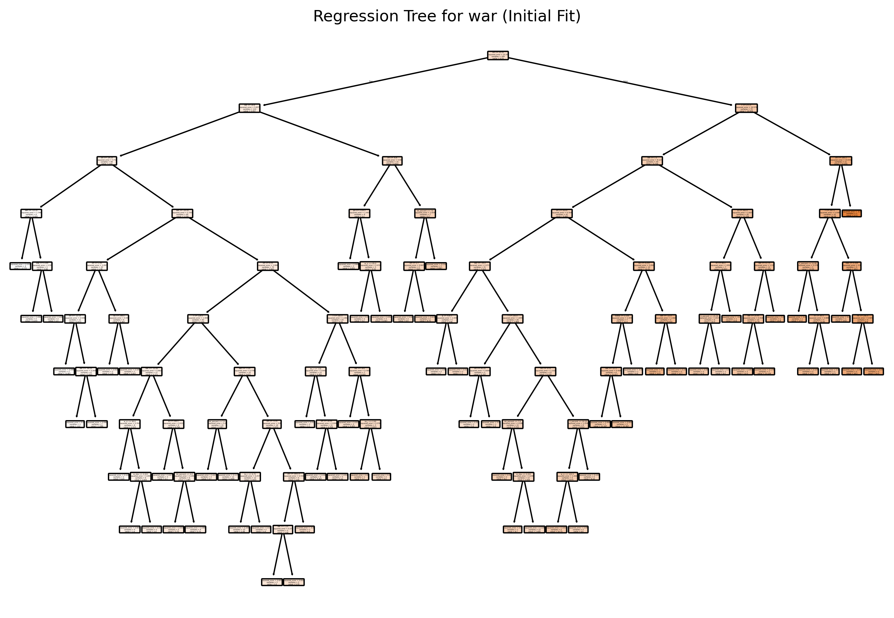
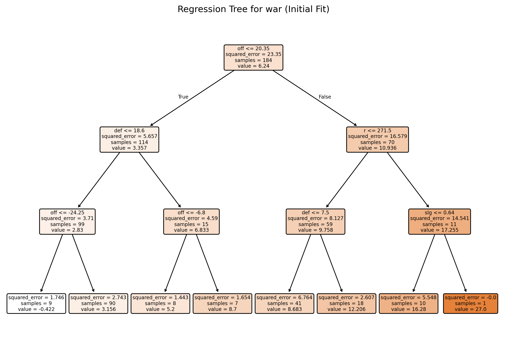
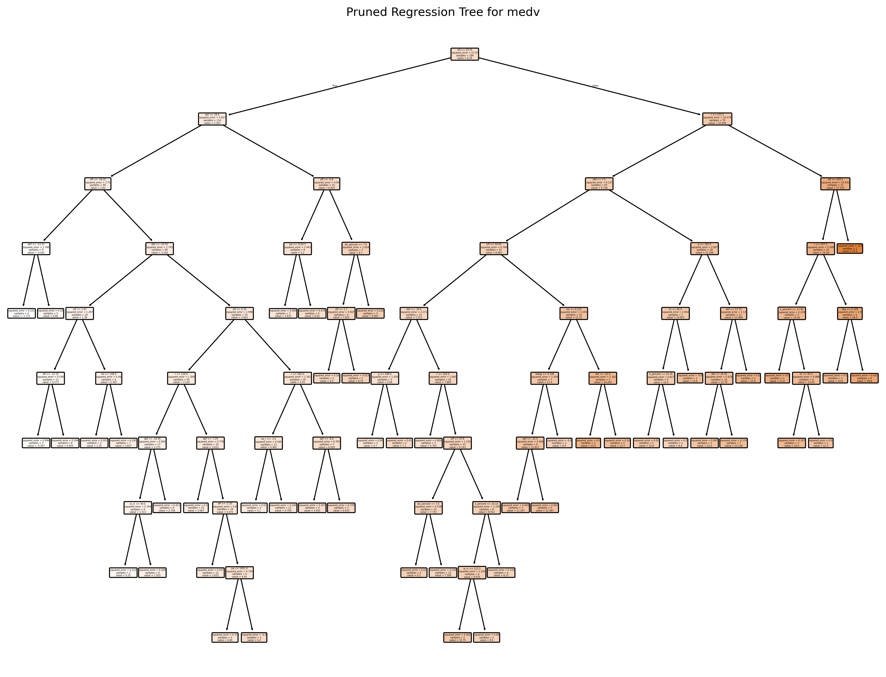
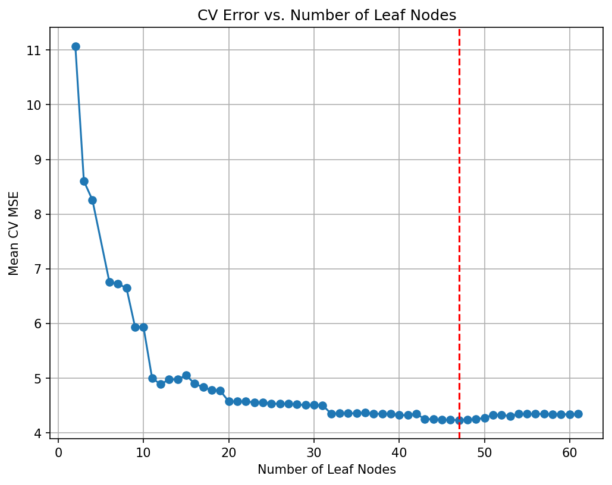
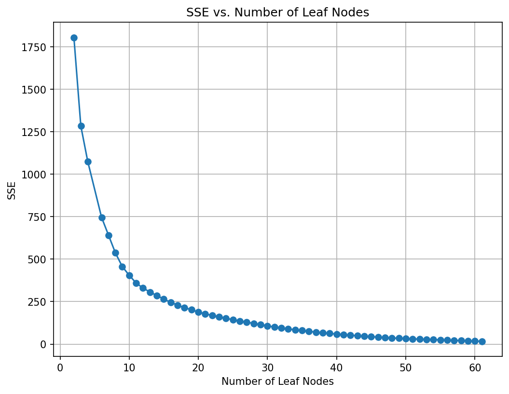
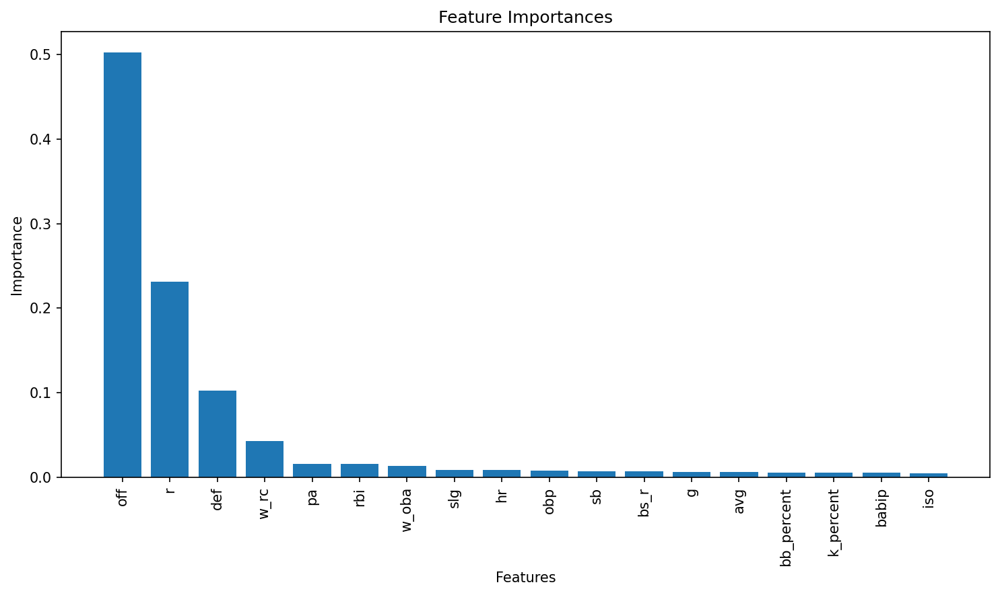
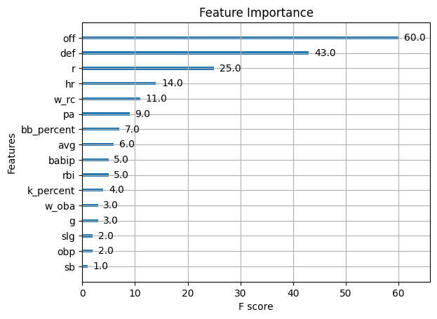
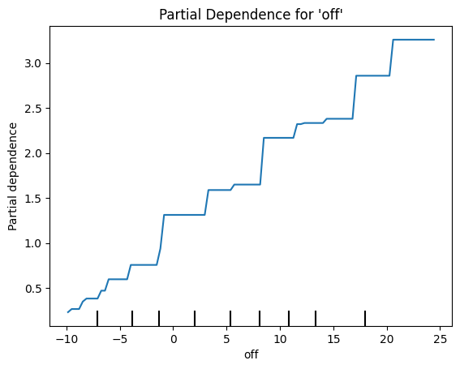

import pandas as pd
import numpy as np
import seaborn as sns
import matplotlib.pyplot as plt
from sklearn.model_selection import train_test_split, KFold, cross_val_score
from sklearn.metrics import mean_squared_error
from sklearn.tree import DecisionTreeClassifier, DecisionTreeRegressor, plot_tree
from sklearn.ensemble import RandomForestRegressorHomework 4 - Part 2: Tree-based Models
MLB Batting
mlb_battings_2024 = pd.read_csv("https://bcdanl.github.io/data/mlb_battings_2024.csv")
mlb_battings_2024.shape(230, 19)mlb_battings_2024| g | pa | hr | r | rbi | sb | bb_percent | k_percent | iso | babip | avg | obp | slg | w_oba | w_rc | bs_r | off | def | war | |
|---|---|---|---|---|---|---|---|---|---|---|---|---|---|---|---|---|---|---|---|
| 0 | 421 | 1858 | 157 | 334 | 350 | 29 | 17.9 | 25.6 | 0.370 | 0.341 | 0.304 | 0.433 | 0.674 | 0.455 | 202 | -1.8 | 216.3 | -16.4 | 27.0 |
| 1 | 473 | 2082 | 90 | 313 | 296 | 76 | 8.7 | 19.1 | 0.207 | 0.291 | 0.266 | 0.340 | 0.473 | 0.350 | 128 | 8.9 | 77.5 | 43.1 | 19.6 |
| 2 | 451 | 1996 | 132 | 326 | 320 | 90 | 12.2 | 23.3 | 0.309 | 0.332 | 0.296 | 0.385 | 0.605 | 0.411 | 168 | 10.6 | 169.9 | -48.1 | 19.2 |
| 3 | 467 | 2076 | 72 | 329 | 291 | 45 | 11.3 | 15.6 | 0.206 | 0.347 | 0.314 | 0.399 | 0.520 | 0.391 | 153 | 4.7 | 136.8 | -25.2 | 18.6 |
| 4 | 469 | 2035 | 82 | 304 | 285 | 110 | 6.2 | 17.8 | 0.217 | 0.316 | 0.288 | 0.336 | 0.505 | 0.356 | 128 | 19.3 | 84.4 | 28.9 | 18.5 |
| ... | ... | ... | ... | ... | ... | ... | ... | ... | ... | ... | ... | ... | ... | ... | ... | ... | ... | ... | ... |
| 225 | 412 | 1587 | 51 | 166 | 162 | 12 | 10.3 | 26.1 | 0.177 | 0.272 | 0.221 | 0.303 | 0.397 | 0.305 | 91 | -2.2 | -18.0 | -41.9 | -0.8 |
| 226 | 417 | 1603 | 53 | 159 | 189 | 13 | 5.5 | 25.1 | 0.158 | 0.300 | 0.247 | 0.289 | 0.405 | 0.300 | 87 | -5.6 | -30.8 | -33.2 | -1.0 |
| 227 | 288 | 1017 | 25 | 119 | 85 | 15 | 8.3 | 20.7 | 0.120 | 0.263 | 0.223 | 0.293 | 0.343 | 0.282 | 73 | -1.3 | -33.5 | -18.2 | -1.8 |
| 228 | 313 | 1105 | 36 | 124 | 133 | 15 | 6.1 | 24.2 | 0.160 | 0.261 | 0.221 | 0.268 | 0.381 | 0.280 | 75 | -0.2 | -32.8 | -24.0 | -2.1 |
| 229 | 381 | 1255 | 35 | 93 | 141 | 3 | 7.8 | 20.6 | 0.140 | 0.262 | 0.227 | 0.291 | 0.368 | 0.288 | 84 | -5.1 | -28.4 | -34.7 | -2.2 |
230 rows × 19 columns
Regression Tree
# Set a random seed for reproducibility (like R's set.seed)
np.random.seed(42120532)
train, test = train_test_split(mlb_battings_2024, test_size=0.20, random_state=42120532)X_train = train.drop(columns=["war"])
y_train = train["war"]
X_test = test.drop(columns=["war"])
y_test = test["war"]
# In scikit-learn, we can use min_impurity_decrease=0.005 for a similar effect.
tree_model = DecisionTreeRegressor(min_impurity_decrease=0.005, random_state=42)
# Fit the model using all predictors (all columns except 'medv')
tree_model.fit(X_train, y_train)
# Predict on training and test sets
y_train_pred = tree_model.predict(X_train)
y_test_pred = tree_model.predict(X_test)
# Calculate MSE
mse_train = mean_squared_error(y_train, y_train_pred)
mse_test = mean_squared_error(y_test, y_test_pred)
# Print the results
print(f"Training MSE: {mse_train:.3f}")
print(f"Test MSE: {mse_test:.3f}")
# Plot the initial regression tree
plt.figure(figsize=(12, 8), dpi = 300)
plot_tree(tree_model, feature_names=X_train.columns, filled=True, rounded=True)
plt.title("Regression Tree for war (Initial Fit)")
plt.show()Training MSE: 0.092
Test MSE: 6.154
# In scikit-learn, we can use min_impurity_decrease=0.005 for a similar effect.
tree_model = DecisionTreeRegressor(max_depth=3, min_impurity_decrease=0.005, random_state=42)
# Fit the model using all predictors (all columns except 'medv')
tree_model.fit(X_train, y_train)
# Predict on training and test sets
y_train_pred = tree_model.predict(X_train)
y_test_pred = tree_model.predict(X_test)
# Calculate MSE
mse_train = mean_squared_error(y_train, y_train_pred)
mse_test = mean_squared_error(y_test, y_test_pred)
# Print the results
print(f"Training MSE: {mse_train:.3f}")
print(f"Test MSE: {mse_test:.3f}")
# Plot the initial regression tree
plt.figure(figsize=(12, 8), dpi = 300)
plot_tree(tree_model, feature_names=X_train.columns, filled=True, rounded=True)
plt.title("Regression Tree for war (Initial Fit)")
plt.show()Training MSE: 3.61641995
Test MSE: 7.20819639
Prunning
# Obtain the cost-complexity pruning path from the initial tree
path = tree_model.cost_complexity_pruning_path(X_train, y_train) # Get candidate ccp_alpha values and corresponding impurities
ccp_alphas = path.ccp_alphas # Candidate pruning parameters (alpha values)
impurities = path.impurities # Impurity values at each candidate alpha
# Exclude the maximum alpha value to avoid the trivial tree (a tree with only the root)
ccp_alphas = ccp_alphas[:-1] # Remove the last alpha value which would prune the tree to a single node
# Set up 10-fold cross-validation
kf = KFold(n_splits=10, shuffle=True, random_state=42) # Initialize 10-fold CV with shuffling and fixed random state
cv_scores = [] # List to store mean cross-validated scores (negative MSE)
leaf_nodes = [] # List to record the number of leaves for each pruned tree
sse = [] # List to record the sum of squared errors (SSE) on the training set
# Loop over each candidate alpha value to evaluate its performance
for ccp_alpha in ccp_alphas:
# Create a DecisionTreeRegressor with the current ccp_alpha and other specified parameters
clf = DecisionTreeRegressor(random_state=42,
ccp_alpha=ccp_alpha,
min_impurity_decrease=0.005)
# Perform 10-fold cross-validation and compute negative mean squared error (MSE)
scores = cross_val_score(clf, X_train, y_train,
cv=kf, scoring="neg_mean_squared_error")
cv_scores.append(np.mean(scores)) # Append the mean CV score for the current alpha
# Fit the tree on the training data to record additional metrics
clf.fit(X_train, y_train)
leaf_nodes.append(clf.get_n_leaves()) # Record the number of leaf nodes in the tree
# Compute SSE (sum of squared errors) on the training set
preds = clf.predict(X_train) # Predict target values on training data
sse.append(np.sum((y_train - preds) ** 2)) # Calculate and record SSE for training set
# Select the best alpha based on the highest (least negative) mean CV score
best_alpha = ccp_alphas[np.argmax(cv_scores)] # Identify the alpha with the best CV performance
print("Best alpha:", best_alpha) # Print the best alpha value
# Train the final pruned tree using the best alpha found
final_tree = DecisionTreeRegressor(random_state=42,
ccp_alpha=best_alpha,
min_impurity_decrease=0.005)
final_tree.fit(X_train, y_train) # Fit the final model on the training data
len(ccp_alphas)
preds_train = final_tree.predict(train.drop(columns=["war"]))
mse_train = mean_squared_error(y_train, preds_train)
print("Train MSE:", mse_train)
preds = final_tree.predict(test.drop(columns=["war"]))
mse = mean_squared_error(y_test, preds)
print("Test MSE:", mse)
# Plot the pruned tree.
plt.figure(figsize=(16, 12), dpi=300)
plot_tree(final_tree, feature_names=X_train.columns, filled=True, rounded=True)
plt.title("Pruned Regression Tree for medv")
plt.show()
# Summary of the final tree
print("Number of leaves in the pruned tree:", final_tree.get_n_leaves())
print("Tree depth:", final_tree.get_depth())Best alpha: 0.012181159420289953
Train MSE: 0.21034767647811128
Test MSE: 5.97171015229301
Number of leaves in the pruned tree: 47
Tree depth: 9# Plot the average cross-validated MSE against the number of leaf nodes
negative_cv_scores = -np.array(cv_scores)
plt.figure(figsize=(8, 6), dpi=150)
plt.plot(leaf_nodes, negative_cv_scores, marker='o', linestyle='-')
plt.axvline(x=final_tree.get_n_leaves(), color='red', linestyle='--', label='Leaf Nodes = 21') # Add vertical line at 21 leaf nodes
plt.xlabel("Number of Leaf Nodes")
plt.ylabel("Mean CV MSE")
plt.title("CV Error vs. Number of Leaf Nodes")
plt.grid(True)
plt.show()
# Plot the SSE on the training against the number of leaf nodes
plt.figure(figsize=(8, 6), dpi=150)
plt.plot(leaf_nodes, sse, marker='o', linestyle='-')
plt.xlabel("Number of Leaf Nodes")
plt.ylabel("SSE")
plt.title("SSE vs. Number of Leaf Nodes")
plt.grid(True)
plt.show()
Random Forest
# Build the Random Forest model
# max_features=13 means that at each split the algorithm randomly considers 13 predictors.
rf = RandomForestRegressor(max_features=13, # Use 13 features at each split
n_estimators=500, # Number of trees in the forest
random_state=42,
oob_score=True) # Use out-of-bag samples to estimate error
rf.fit(X_train, y_train)
# Print the model details
print("Random Forest Model:")
print(rf)
# Output the model details (feature importances, OOB score, etc.)
print("Out-of-bag score:", rf.oob_score_) # A rough estimate of generalization error
# Generate predictions on training and testing sets
y_train_pred = rf.predict(X_train)
y_test_pred = rf.predict(X_test)
# Calculate Mean Squared Errors (MSE) for both sets
train_mse = mean_squared_error(y_train, y_train_pred)
test_mse = mean_squared_error(y_test, y_test_pred)
print("Train MSE:", train_mse)
print("Test MSE:", test_mse)
# Optional: Plot predicted vs. observed values for test data
# plt.figure(figsize=(8,6), dpi=300)
# plt.scatter(y_test, y_test_pred, alpha=0.7)
# plt.plot([min(y_test), max(y_test)], [min(y_test), max(y_test)], 'r--')
# plt.xlabel("Observed medv")
# plt.ylabel("Predicted medv")
# plt.title("Random Forest: Observed vs. Predicted Values")
# plt.show()Random Forest Model:
RandomForestRegressor(max_features=13, n_estimators=500, oob_score=True,
random_state=42)
Out-of-bag score: 0.8998284519241363
Train MSE: 0.3287167456521755
Test MSE: 3.3319365208695935# Get feature importances from the model (equivalent to importance(bag.boston) in R)
importances = rf.feature_importances_
feature_names = X_train.columns
print("Feature Importances:")
for name, imp in zip(feature_names, importances):
print(f"{name}: {imp:.4f}")
# Plot the feature importances, similar to varImpPlot(bag.boston) in R
# Sort the features by importance for a nicer plot.
indices = np.argsort(importances)[::-1]
plt.figure(figsize=(10, 6), dpi=150)
plt.title("Feature Importances")
plt.bar(range(len(feature_names)), importances[indices], align='center')
plt.xticks(range(len(feature_names)), feature_names[indices], rotation=90)
plt.xlabel("Features")
plt.ylabel("Importance")
plt.tight_layout()
plt.show()Feature Importances:
g: 0.0062
pa: 0.0164
hr: 0.0086
r: 0.2313
rbi: 0.0158
sb: 0.0076
bb_percent: 0.0059
k_percent: 0.0057
iso: 0.0049
babip: 0.0055
avg: 0.0062
obp: 0.0084
slg: 0.0087
w_oba: 0.0140
w_rc: 0.0430
bs_r: 0.0069
off: 0.5021
def: 0.1028
XGBoost
import xgboost as xgb
from xgboost import XGBRegressor, plot_importance
from sklearn.model_selection import GridSearchCV
from sklearn.inspection import PartialDependenceDisplay
# Define the grid of hyperparameters
param_grid = {
"n_estimators": list(range(20, 201, 20)), # nrounds: 20, 40, ..., 200
"learning_rate": [0.025, 0.05, 0.1, 0.3], # eta
"gamma": [0], # gamma
"max_depth": [1, 2, 3, 4],
"colsample_bytree": [1],
"min_child_weight": [1],
"subsample": [1]
}
# Initialize the XGBRegressor with the regression objective and fixed random state for reproducibility
xgb_reg = XGBRegressor(objective="reg:squarederror", random_state=1937, verbosity=1)
# Set up GridSearchCV with 10-fold cross-validation; scoring is negative MSE
grid_search = GridSearchCV(
estimator=xgb_reg,
param_grid=param_grid,
scoring="neg_mean_squared_error",
cv=10,
verbose=1 # Adjust verbosity as needed
)
# Fit the grid search
grid_search.fit(X_train, y_train)
# Train the final model using the best parameters (grid_search.best_estimator_ is already refit on entire data)
final_model = grid_search.best_estimator_
# Plot variable importance using XGBoost's plot_importance function
plt.figure(figsize=(10, 8))
plot_importance(final_model)
plt.title("Feature Importance")
plt.show()
# Calculate MSE on the training data
y_pred_train = final_model.predict(X_train)
train_mse = mean_squared_error(y_train, y_pred_train)
print("Train MSE:", train_mse)
# Calculate MSE on the test data
y_pred = final_model.predict(X_test)
test_mse = mean_squared_error(y_test, y_pred)
print("Test MSE:", test_mse)
# Print the best parameters found by GridSearchCV
best_params = grid_search.best_params_
print("Best parameters:", best_params)Fitting 10 folds for each of 160 candidates, totalling 1600 fits<Figure size 1000x800 with 0 Axes>
Train MSE: 0.12103999913356943
Test MSE: 0.7061771964936895
Best parameters: {'colsample_bytree': 1, 'gamma': 0, 'learning_rate': 0.3, 'max_depth': 1, 'min_child_weight': 1, 'n_estimators': 200, 'subsample': 1}# Plot partial dependence for the predictor 'off'
feature_names = mlb_battings_2024.drop(columns=["war"]).columns.tolist()
off_index = feature_names.index("off")
PartialDependenceDisplay.from_estimator(final_model, X_train, features=[off_index],
feature_names=feature_names, kind="average")
plt.title("Partial Dependence for 'off'")
plt.show()
Predictive performance and Overffiting
Train vs. Test MSE for Tree‑Based Models
| Model | Train MSE | Test MSE |
|---|---|---|
| Regression tree (no depth limit) | 0.092 | 6.154 |
| Regression tree (max_depth = 3) | 3.616 | 7.208 |
| CV‑pruned tree | 0.210 | 5.972 |
| Random forest | 0.329 | 3.332 |
| Gradient boosted tree | 0.120 | 0.706 |
Predictive Performance Comparison
- Unrestricted Regression Tree
- Train MSE: 0.092 (very low)
- Test MSE: 6.154 (high)
- Interpretation: Severe overfitting—model fits noise in training data but generalizes poorly.
- Train MSE: 0.092 (very low)
- Shallow Tree (max_depth = 3)
- Train MSE: 3.616
- Test MSE: 7.208 (highest)
- Interpretation: Underfitting—model is too simple, yielding both high training and test errors.
- Train MSE: 3.616
- CV‑Pruned Tree
- Train MSE: 0.210
- Test MSE: 5.972
- Interpretation: Pruning reduces complexity relative to the unrestricted tree, lowering the gap between train and test error but still overfits somewhat.
- Train MSE: 0.210
- Random Forest
- Train MSE: 0.329
- Test MSE: 3.332
- Interpretation: Bagging of many trees greatly reduces variance and overfitting compared to single trees, cutting test error by nearly half.
- Train MSE: 0.329
- Gradient Boosted Tree
- Train MSE: 0.120
- Test MSE: 0.706 (lowest)
- Interpretation: Sequential boosting captures complex patterns with controlled regularization, achieving the best predictive performance and modest overfit.
- Train MSE: 0.120
Overfitting Analysis
| Model | Train MSE | Test MSE | Abs. Difference (Test – Train) |
|---|---|---|---|
| Regression tree (no depth limit) | 0.092 | 6.154 | 6.062 |
| Regression tree (max_depth = 3) | 3.616 | 7.208 | 3.592 |
| CV‑pruned tree | 0.210 | 5.972 | 5.762 |
| Random forest | 0.329 | 3.332 | 3.003 |
| Gradient boosted tree | 0.120 | 0.706 | 0.586 |
- Overfit severity can be gauged by the gap between Train and Test MSE:
- Unrestricted tree: gap ≈ 6.062 → very high overfit
- Pruned tree: gap ≈ 5.762 → still substantial overfit
- Random forest: gap ≈ 3.003 → moderate overfit
- Gradient boosted tree: gap ≈ 0.586 → low overfit
- Unrestricted tree: gap ≈ 6.062 → very high overfit
- Underfitting is evident in the shallow tree (max_depth = 3), which shows both high train and test error.
Overfitting Summary:
- Single trees either overfit (no limit) or underfit (too shallow).
- Pruning helps but does not eliminate overfitting entirely.
- Ensembles (random forest and boosting), particularly boosting, shows a minimal overfit on the test set.